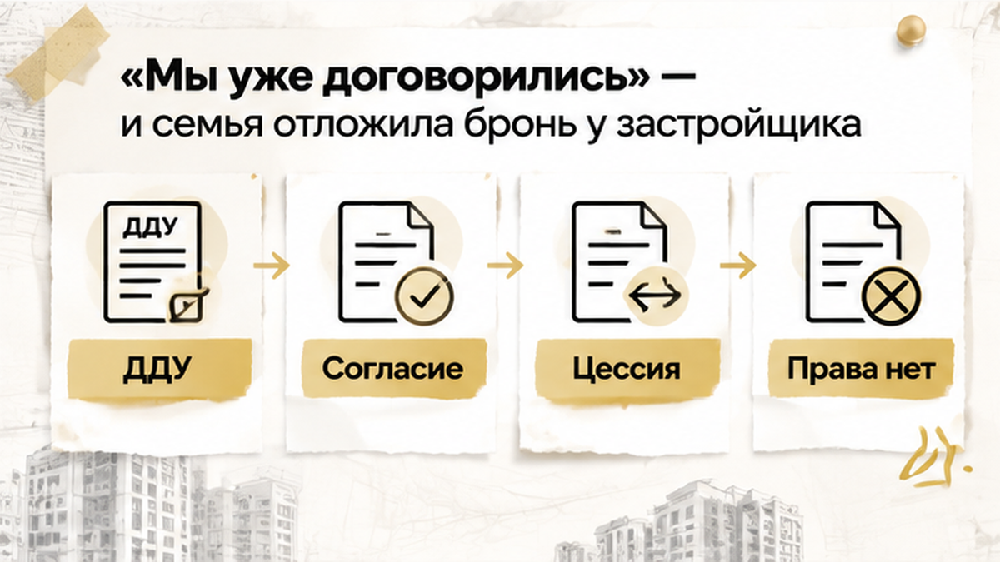

За сутки до поездки в офис продаж тюменская семья узнала, что выбранная квартира уже ушла другому покупателю. До этого всё выглядело почти решённым: цена переуступки согласована, документы по зарегистрированному ДДУ собирались неделю, деньги на эскроу ещё не переводились. В переписке с продавцом прав семья увидела короткую новость — тот же лот забронировали. Отдельной брони у застройщика не было, а договор цессии ещё не прошёл государственную регистрацию. Поэтому вместе с планировкой исчезла и согласованная цена, хотя крупной денежной потери удалось избежать.
Я — Святослав Шакин, The Риэлтор в Тюмени. В Telegram разбираю такие истории без канцелярита, а в MAX отвечаю на короткие вопросы по новостройкам и переуступкам.
В тот день семье казалось, что главное уже сделано: подходящая планировка выбрана, цена с цедентом согласована, документы начали готовить. Впереди оставались договор цессии, его регистрация и переход прав по ДДУ — поэтому бронь у застройщика сочли второстепенной.
Логика понятная. Если продавец согласен уступить права, а пакет документов собирается, конкретная квартира словно уже занята. В реальности переписка между цедентом и покупателем не попадает в систему отдела продаж и не обязывает застройщика снимать лот с реализации. Согласованная цена тоже не фиксирует квартиру.
Бронь работает иначе — это временная фиксация конкретного лота, иногда вместе с его ценой, на срок, указанный в договоре бронирования. Такой документ не регистрируется в Росреестре и сам по себе не делает покупателя дольщиком. Зато для отдела продаж он может стать основанием не оформлять эту квартиру на следующего человека до установленной даты.
Семья плату за бронь не внесла. Крупного аванса по цессии тоже не было, поэтому вопрос возврата денег не возник. Риск оказался другим: выбранный вариант не дождался оформления сделки — ушли нужная планировка, договорённая цена и неделя работы с документами.
Когда в проекте мало свободных квартир, несколько дней между договорённостью и регистрацией способны изменить всю покупку. Пока один покупатель проверяет ДДУ и готовит уступку, другой может прийти в офис продаж раньше, внести предусмотренную плату и закрепить тот же лот за собой.

Переуступка по ДДУ — это передача другому человеку прав и обязанностей по зарегистрированному договору участия в долевом строительстве. Оформить её можно после регистрации исходного ДДУ и до подписания передаточного акта. Если цена ДДУ уже оплачена, передаются права; если остался долг, отдельно решается вопрос его перевода.
Тюменская семья около недели проверяла ДДУ, условия уступки, согласие застройщика, расчёты и документы для регистрации. Работа шла по настоящей сделке, а переход прав ещё не состоялся — до государственной регистрации цессии покупатели не стали участниками долевого строительства по этому ДДУ.
Для покупателя всё уже двигалось: продавец согласен, документы собраны, встреча назначена. Для права важна другая точка — регистрация договора уступки. Переписка и предварительные договорённости показывают намерение сторон, а зарегистрированную цессию не заменяют.
Сначала проверяют исходный ДДУ. В нём может быть запрет на уступку или требование получить письменное согласие застройщика. При полной оплате и отсутствии запрета иногда достаточно уведомления — ориентироваться нужно на конкретный договор. Если за согласие предусмотрена комиссия, её размер и порядок внесения должны быть понятны до подписания.
Затем сверяют оплату по ДДУ, наличие долга перед застройщиком, сведения о квартире и регистрацию исходного договора. Если цедент покупал жильё с ипотекой, понадобится согласование банка. Такие проверки помогают не потерять время из-за неподготовленной уступки, пока подходящий лот остаётся доступным для других.
Расчёты до регистрации цессии тоже выстраивают не на доверии. Всю сумму продавцу обычно не передают только потому, что стороны подписали бумаги. Используют безопасную схему — например, аккредитив или ячейку с условием доступа после нужного события.
А пакет документов отвечал только на один вопрос: как оформить переход прав. Оставался другой — кто удерживает конкретную квартиру до завершения регистрации? У семьи был план сделки с цедентом, а документа, который временно закреплял бы лот за ними у застройщика, не было.
За день до визита в офис семья ещё считала вопрос почти решённым. Цена была согласована, документы собирались около недели, а планировка уже воспринималась как выбранная. Затем выяснилось: действующей брони от этой семьи у застройщика нет.
Пока готовился пакет для переуступки, другой покупатель внёс плату за бронь на ту же планировку. Переписка с продавцом прав фиксировала договорённости только между двумя сторонами — застройщика она не обязывала удерживать квартиру.
После этого переговоры о цессии уже не могли вернуть семье именно этот лот. Оставалось обсуждать другую квартиру, заново сравнивать планировки или искать новый вариант переуступки. Первоначальная связка — конкретная квартира, согласованная цена и удобный срок — распалась за один день.
Здесь нет противоречия: цедент мог быть готов к сделке, а застройщик — оформить бронь на другого человека. Цедент распоряжается правами по своему ДДУ, а застройщик учитывает, кто получил резерв на конкретный лот и на каких условиях.
По статье 11 закона № 214-ФЗ уступка возможна после регистрации ДДУ и до подписания передаточного акта. Права переходят к покупателю после государственной регистрации договора цессии. Поэтому подготовленный пакет ещё не равен зарегистрированной сделке — и не заменяет письменную бронь у застройщика.
Семья не потеряла деньги на эскроу и не передавала продавцу крупный аванс по цессии — до такого расчёта дело не дошло. Финансового ущерба в привычном смысле не случилось.
А потеря всё равно была ощутимой: ушли конкретная планировка, согласованная с цедентом цена и неделя работы с документами. Когда подходящих лотов в проекте немного, несколько дней без фиксации меняют всю покупку.
Эскроу — специальный счёт для расчётов по ДДУ. Деньги находятся на нём и не передаются застройщику напрямую до выполнения условий сделки. Это защищает расчёты внутри уже оформленной конструкции, а квартиру на время переговоров о переуступке не резервирует.
Отсюда важное разделение — эскроу отвечает за деньги, бронь застройщика за временное удержание конкретного лота. Один документ не заменяет другой.
Похожая разница видна и в ипотеке: одобрение ипотеки ещё не означает, что эскроу открыт. Банк мог принять положительное решение, а деньги и сама сделка ещё не дошли до финальной точки. Так же согласованная переуступка может идти по плану, пока квартира остаётся открытой для другого покупателя.
Для семьи всё было связано в одну цепочку: цена с цедентом согласована, документы собираются, цессия готовится к регистрации. В системе застройщика картина выглядела иначе — важен действующий резерв по конкретному лоту и покупатель, который первым внёс предусмотренный платёж.
Переуступка передаёт другому человеку права и обязанности по зарегистрированному ДДУ. Переход завершается после государственной регистрации договора цессии. До этого покупатель ещё не стал участником долевого строительства, а договорённая цена сама по себе квартиру не удерживает.
Бронь у застройщика на ограниченный срок фиксирует конкретный лот, иногда вместе с его ценой. В Росреестре такой документ не регистрируется и дольщиком человека не делает, зато для отдела продаж может стать основанием временно не оформлять квартиру на другого покупателя.
Поэтому цессия могла готовиться, а квартира — оставаться доступной для новой сделки. Один документ двигался к регистрации между прежним и новым участником ДДУ, пока другой покупатель оформлял бронь непосредственно в офисе продаж.
В этом нет обязательного противоречия с действиями цедента. Он мог быть готов подписать документы и передать права. Просто договорённость между продавцом и покупателем не связана автоматически с бронью в системе застройщика.
При уступке к новому участнику переходят права и обязанности по ДДУ, в том числе связанные со счётом эскроу, — после регистрации цессии. До этого проверяют исходный договор: зарегистрирован ли ДДУ, полностью ли оплачена его цена, нет ли долга, обременения или требования отдельного согласия застройщика.
Подготовленный следующий шаг нельзя принимать за уже возникшее право. Это видно и в другой ситуации: изменение условий ипотеки перед ДДУ может остановить сделку.
До передачи денег проверку лучше вести по двум линиям — исходный ДДУ и продавец прав, затем конкретный лот у застройщика. Только когда эти линии сходятся, понятно, что покупатель получает именно ту квартиру и на тех условиях, о которых договорился.
| Что проверить | Зачем это нужно | Что запросить |
|---|---|---|
| Регистрацию исходного ДДУ | Без регистрации уступать права нельзя | ДДУ и выписку ЕГРН |
| Оплату цены ДДУ или перевод долга | Нужно понимать, какой долг переходит покупателю | Акт сверки и подтверждения платежей |
| Условия уступки | ДДУ может требовать согласия застройщика | Пункт ДДУ и письменную позицию застройщика |
| Действующую бронь | Согласование цессии само по себе лот не удерживает | Договор бронирования с номером, сроком и ценой |
| Условия платежа за бронь | Возврат и зачёт зависят от формулировок | Условия возврата, зачёта и продления |
| Обременения и ипотеку | Может потребоваться согласие банка | Выписку ЕГРН и согласие банка |
| Порядок расчётов | Передача всей суммы до регистрации повышает риск | Условие об аккредитиве или ячейке |
Отдельно смотрят срок брони — номер квартиры, дату окончания, возможность продления и последствия задержки регистрации цессии. Фраза менеджера «мы его держим» не заменяет документ с номером лота и датой, до которой квартира закреплена.
Комиссия за согласие застройщика тоже не имеет единого тарифа. Если такой платёж предусмотрен ДДУ или правилами проекта, его размер и момент внесения должны быть понятны до подписания документов.
Переуступку можно «держать» без брони у застройщика — или это самообман?
Практический ответ простой: параллельно с согласованием цессии нужно запросить у застройщика письменную бронь на тот же лот либо другой понятный резерв до даты регистрации. Если свободных планировок мало, неделя без такой фиксации оставляет квартиру открытой для другого покупателя.
Не стоит отправлять деньги на эскроу раньше времени ради ощущения контроля. Сначала сверяются ДДУ, ЕГРН, расчёты и условия уступки, затем согласовывается безопасный порядок оплаты — например, через аккредитив или ячейку с условием доступа. В новостройке Тюмени покупка спокойнее, когда договорённость отделена от возникшего права, а каждый важный шаг закреплён письменно.
Что бы вы проверили первым — зарегистрированную цессию или письменную бронь на конкретный лот?